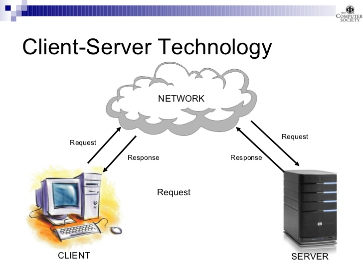

COMMUNICATION PATTERNS
Depending on the application, communication pattern can be one of the following:
- 1 One-to-one (1:1) communication:
- 2 One-to-many (1:m) communication:
- 3 Many-to-one (m:1) Communication:
- 4 Many-to-many (m:m) communication also known as multipeer communication
This is the type of communication between one sender and one receiver. It is also referred to as unicast communication. Examples client server communication and web browsing.
In this case one sender communicates with more than one receiver. This can either be broadcast where the sender communicates with all the receivers or multicast when the sender communicates with some group of the receivers
E.g a server comunicating with more than one host
 multicast comunication
multicast comunication
E.g. web or Internet TV (Streaming) video on demand
This is the type of communication between many senders and only one receiver. It is also commonly referred to as Concast.
 Concast communications
Concast communications
E.g.
- statistics logging
– sensor ‘fusion’ (plant or utility infrastructure monitoring,
wildlife tracking)
– coursework submission
– not studied very much, except as a particular case of
many-to-many
 Multipeer communications
Multipeer communications
E.g.
– conferencing (usually all-to-all within a group)
– group teaching (all listen, maybe only subset speak)
Note: each member may be a sender, a receiver, or both. If no member is a receiver, communication is pointless! After unicast, multicast is one of the best recognized patterns.